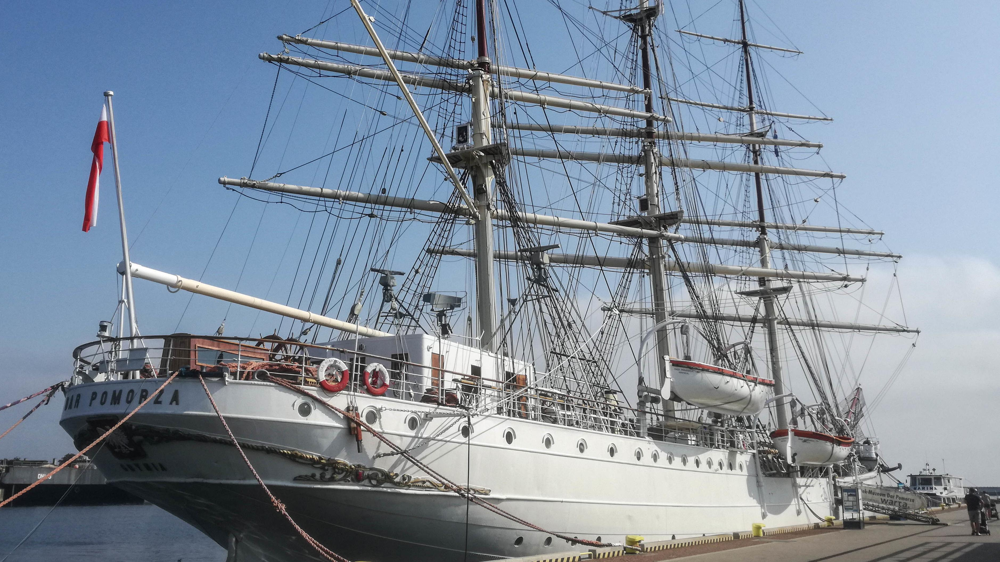
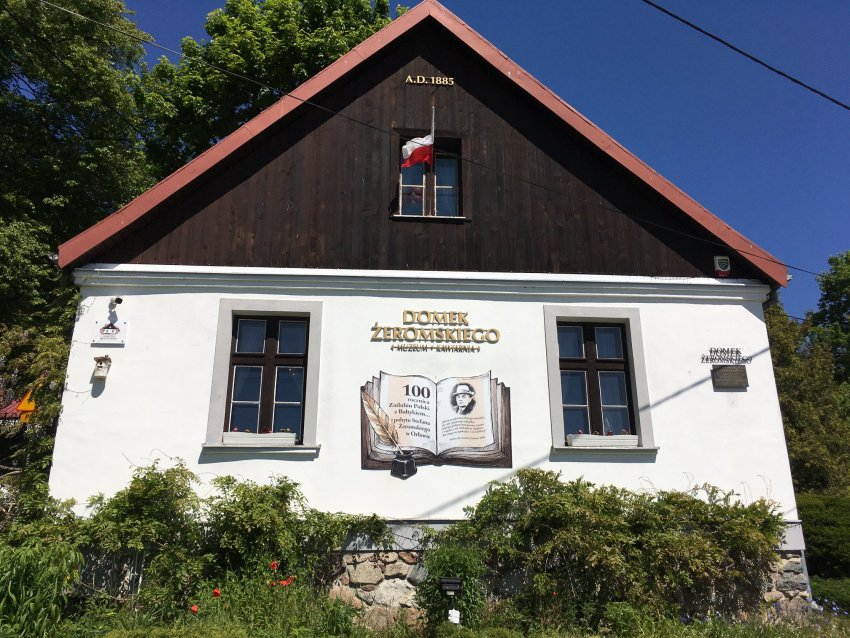
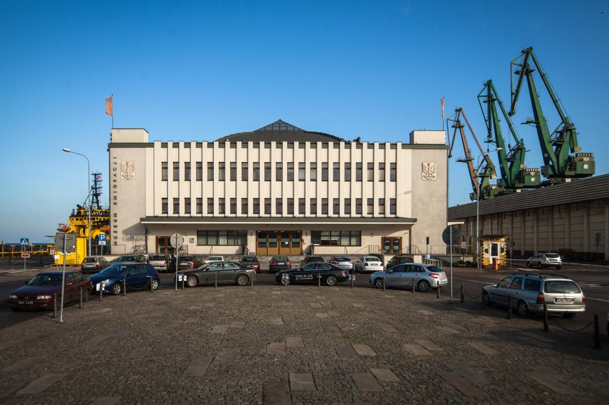
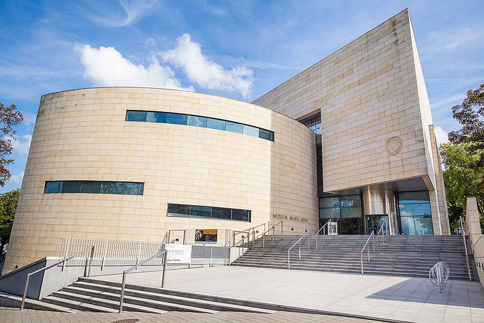

Gdynia posiada 10 muzeów, w tym 2 z nich to statki. Ich tematyka głównie jest związana z morzem. Do najbardziej znanych należą:
Dar Pomorza to słynny trzymasztowy żaglowiec szkolny. Bardzo często jest nazywany „Białą Fregatą”. Wybudowany został w 1910 roku. Do lipca 1929 roku służył Niemcom oraz Francuzom. Później zakupił go polski Komitet Floty Narodowej. Następnie przeholowano go do duńskiej stoczni, gdzie przeszedł remont. Ostatecznie przybył do Gdyni 19 czerwca 1930 roku. Wtedy nadano mu nazwę „Dar Pomorza”, aby upamiętnić wkład finansowy mieszkańców Pomorza. Statek służył głównie szkoleniom studentów. Odbył 102 rejsy szkolne oraz wyszkolił 13 384 studentów. Wybitnym osiągnięciem było także rejs dookoła świata. Muzeum otwarto w 1982 roku, jako oddział Narodowego Muzeum Morskiego w Gdańsku. W środku można zobaczyć jego wyposażenie i stare zdjęcia z wypraw.
Domek Żeromskiego to mały rybacki domek położony w Orłowie. W nim przez kilka miesięcy mieszkał Stefan Żeromski wraz z rodziną. Tutaj napisał „Sambora i Mestwina” oraz zabrał się za pisanie „Wiatru od Morza”. Żeromski bardzo chętnie przyjeżdżał nad morze i był zaangażowany w działalność społeczną. W środku domku znajduje się wystawa zdjęć dawnego Orłowa i pamiątek po pisarzu. Funkcjonuje również tam kawiarnia.
Moim zdaniem najciekawsze muzeum. Mieści się w budynku dawnego Dworca Morskiego. W okresie międzywojennym wielu Polaków emigrowało. Zwłaszcza do Stanów Zjednoczonych. W 1930 roku została otwarta linia Gdynia - Nowy Jork. Muzeum zbiera pamiątki i informacje o polskich emigrantach. Prowadzi także liczne warsztaty. Powstało w 2015 roku. Wystawa jest bardzo ciekawa i interaktywna, co sprawia, że muzeum jest bardzo często odwiedzane.
Muzeum poświęcone historii Gdyni, a także promocji polskiej i europejskiej kultury. Bardzo ważny ośrodek dokumentacji miasta. Powstał w 1983 roku. Budynek został stworzony w stylu modernistycznym, aby wpasować się w uroki miasta. Posiada 3 działy: Dział Dokumentacji Historii Miasta i Portu, Dział Sztuki oraz Dział Naukowo-Edukacyjny. Pierwsze dwa zgromadziły do tej pory aż 50 tys. materiałów.
